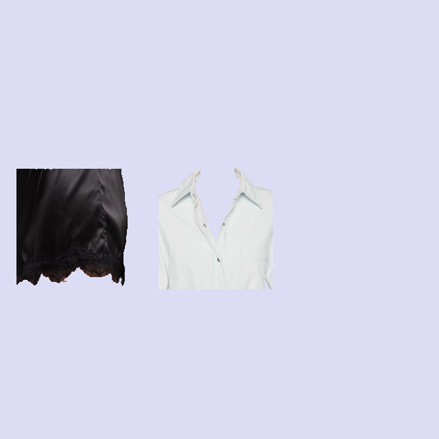
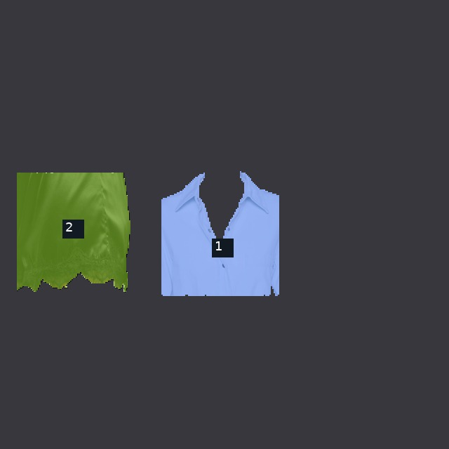
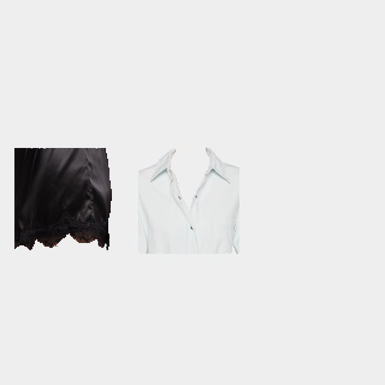
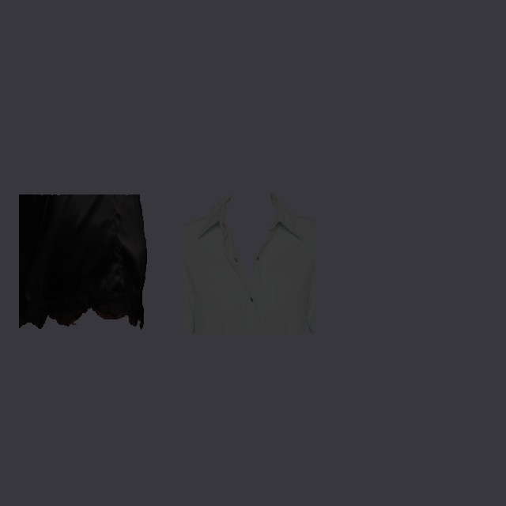
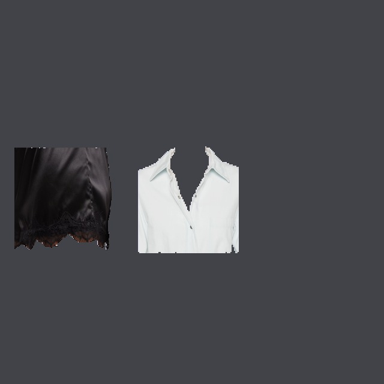
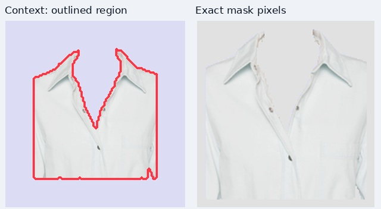
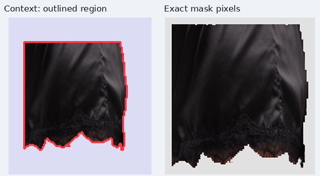

last view absent
control_00_last_view_absent · 1 overview images · 2 closeups ignored · 0 all-view garment groups · 2/2 regions retained
Visibility rule: close-up/detail photographs are ignored entirely by the veto, including its context. Only overview photos must agree. Any visible garment portion in an eligible overview counts. A full silhouette is never required. Unconfirmed regions are removed whole. An empty result is allowed. SAM3 boundaries are unchanged. In the source and veto overlays, dimmed pixels are outside SAM3’s supplied garment mask; red pixels are removed by the veto. This stage cannot fill gaps already missing from SAM3.
Ignored closeups: control_00_last_view_absent_v0, control_00_last_view_absent_v2. No keep/veto decision was made for these photographs.
Original images — eligible overview photographs


SAM3 partitions — numbered inputs


Retained garment pieces


Confirmed identities — each garment keeps the same color across views


Vetoed regions in red; retained pixels unchanged


Confirmed garments across the SKU
Earlier pair-only method: 3 regions kept. Joint SKU method shown above: 2 regions kept. This compares two automatic decisions, not ground-truth accuracy.
Why each piece survived or was vetoed
Each crop shows outlined context on the left and exact mask pixels on the right. Open it at full size to inspect small visible fragments.
| Image / SAM3 regions | Visible piece | Decision | Evidence from other images |
|---|---|---|---|
| control_00_last_view_absent_v1 Regions [1] |  | KEEP | Single distinct image: not cross-view verified |
| control_00_last_view_absent_v1 Regions [2] |  | KEEP | Single distinct image: not cross-view verified |


Download retained labels
PNG labels use each original photograph’s size. NPZ files contain source labels, retained labels and the boolean removed mask at SAM3’s partition resolution.
- control_00_last_view_absent_v1: native PNG labels · partition NPZ

Structured matching evidence · Global inspections: 0.0 seconds; presence reviews and local fragment checks are additional. Cached calls are reused.
Both full-SKU inspections, region-ID maps and model reasoning
{
"forward": null,
"reverse": null
}